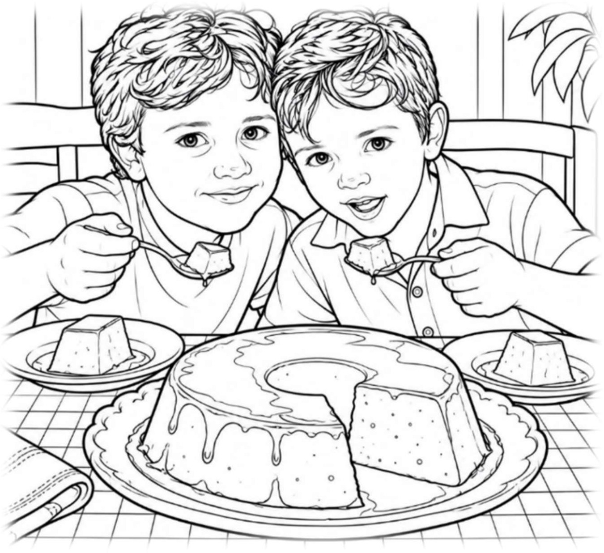

Pudim de Pão
Uma receita econômica, preferida dos netos Michel e Carlos Eduardo, feita com pãozinho amanhecido, que se transforma em uma sobremesa deliciosa, cremosa e cheia de sabor.

Ingredientes Para o pudim
3 pães franceses amanhecidos 500 ml de leite
3 ovos
1 xícara de açúcar
1 colher (sopa) de manteiga
1 colher (chá) de essência de baunilha (opcional) 1 pitada de canela em pó (opcional)
Para a calda
1 xícara de açúcar
½ xícara de água quente
Modo de preparo
- Prepare a calda: derreta o açúcar em uma panela até ficar dourado. Acrescente a água quente com cuidado e mexa até dissolver os torrões. Despeje em uma forma de pudim, espalhando pelo fundo e pelas laterais.
- Prepare a massa: pique os pães e coloque-os de molho no leite por cerca de 10 minutos.
- No liquidificador, bata os pães amolecidos com o leite, os ovos, o açúcar, a manteiga e a baunilha até obter uma mistura homogênea.
- Despeje a mistura na forma caramelizada.
- Cubra com papel-alumínio e asse em banho-maria, no forno preaquecido a 180 °C, por aproximadamente 50 a 70 minutos, ou até firmar.
- Deixe esfriar, leve à geladeira por pelo menos 3 horas e desenforme com cuidado.
Dica da Zelinda: sirva bem geladinho, com bastante calda de caramelo. É uma maneira deliciosa de aproveitar o pão amanhecido e transformar ingredientes simples em uma sobremesa especial!